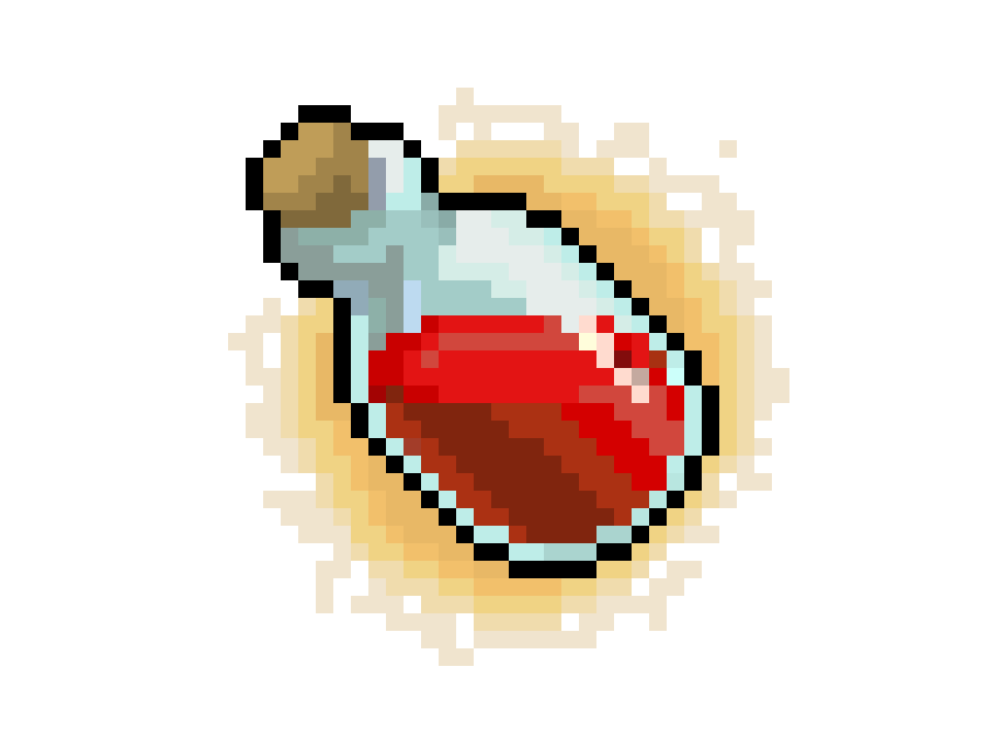
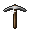
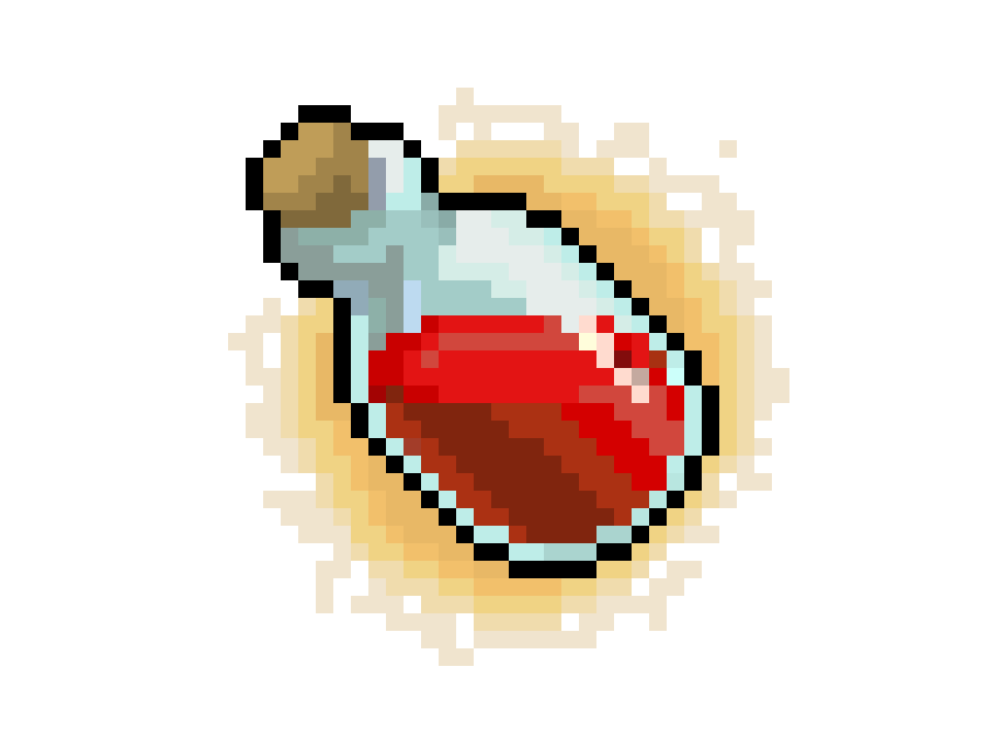
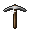

|
|

|

|
Guia da Masmorra:
-Utilize o botão "H" para consumir uma poção e se curar dos ferimentos.
-Você pode derrubar paredes, mas isso danifica a sua picareta.
-Baús podem conter picaretas ou poções.
-Encontros com Minotauros são perigosos e podem custar a sua vida.
-Você pode utilizar o mouse para se locomover, clicando nos quadrados
adjascentes ao Herói, é possível também clicar no ícone da poção
na barra de informações.